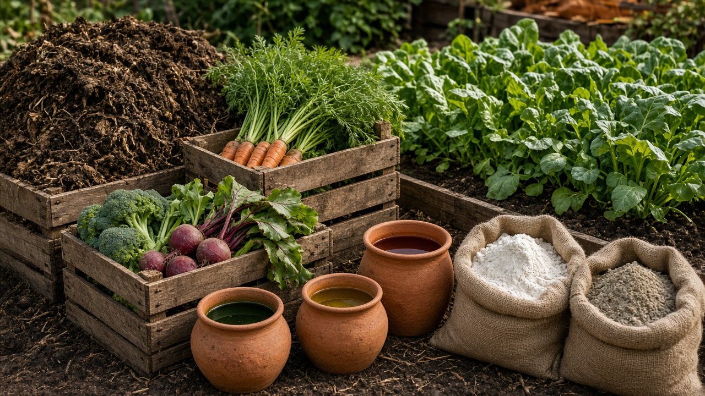
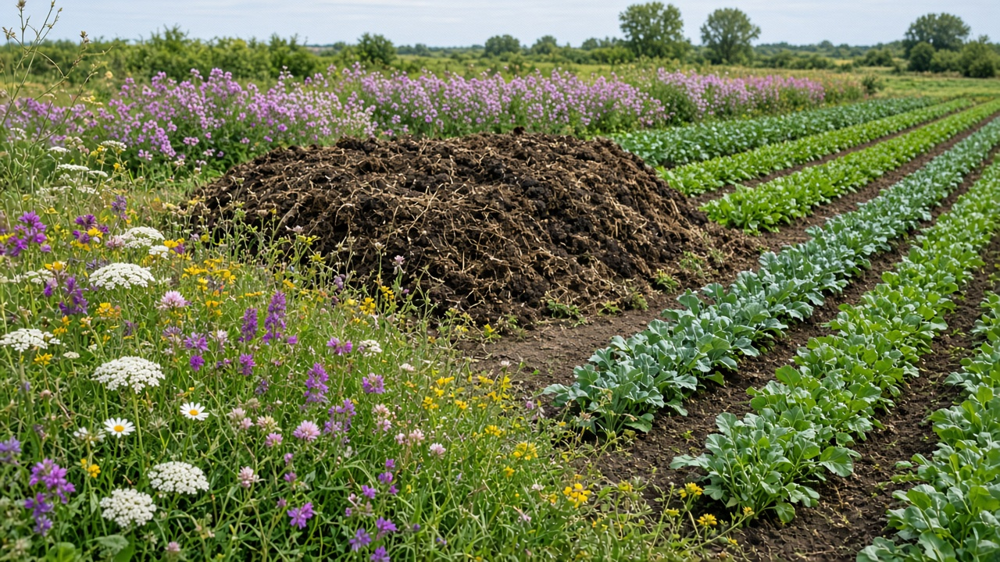
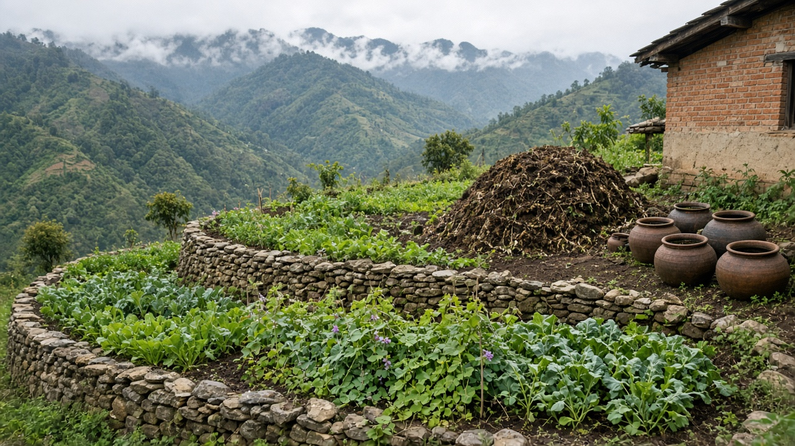

Organic Farming and Natural Inputs
Published on August 20, 2026

Organic farming relies on ecological processes rather than synthetic chemicals to maintain soil fertility, control pests, and produce healthy crops. Natural inputs include compost, green manure, bone meal, rock phosphate, and botanical extracts that feed soil microorganisms and release nutrients slowly. Certification standards prohibit genetically modified seeds, synthetic pesticides, and artificial fertilizers, ensuring that production methods align with consumer expectations for environmental stewardship. Farmers who transition to organic systems often observe improved soil structure, greater water retention, and reduced erosion over several growing seasons.
Cover cropping and crop rotation are cornerstone practices that suppress weeds, break pest cycles, and fix atmospheric nitrogen through leguminous plants. On-farm composting transforms crop residues and livestock manure into rich humus, closing nutrient loops within the farm boundary. Biological pest control uses beneficial insects, trap crops, and microbial inoculants to manage outbreaks without harming pollinators or aquatic ecosystems. Organic producers also emphasize seed saving and local varieties adapted to regional climates, preserving agricultural biodiversity and reducing dependence on external supply chains.
Consumer demand for organic products continues to grow as people seek food free from synthetic residues and produced with lower carbon footprints. Market premiums help offset the labor-intensive nature of organic management, though certification costs and transition periods can challenge smallholders. Governments and cooperatives support organic extension services, group certification schemes, and direct marketing channels such as farmers markets and community-supported agriculture. By investing in natural inputs and holistic farm design, organic agriculture demonstrates that productive food systems can thrive without compromising soil health, water quality, or long-term ecological balance. Schools and community gardens that teach organic methods inspire the next generation of environmentally conscious growers.

जैविक खेतीले माटोको उर्वरता, कीरा नियन्त्रण र स्वस्थ बाली उत्पादनका लागि सिंथेटिक रसायनभन्दा पारिस्थितिक प्रक्रियामा भर पर्छ। प्राकृतिक इनपुटमा कम्पोस्ट, हरियो मल, हड्डीको पाउडर, चट्टानी फस्फेट र वनस्पति अर्क जस्ता सामग्री समावेश छ, जसले माटोका सूक्ष्मजीवहरूलाई पोषण दिन्छ र पोषक तत्व बिस्तारै छोड्छ। प्रमाणीकरण मापदण्डले आनुवंशिक रूपमा परिवर्तित बीउ, सिंथेटिक कीटनाशक र कृत्रिम मल निषेध गर्छ, जसले उत्पादन विधि उपभोक्ताको वातावरणीय संरक्षण अपेक्षासँग मेल खान्छ। जैविक प्रणालीमा परिवर्तन गर्ने किसानहरूले धेरै खेती मौसममा माटोको संरचना, पानी धारण क्षमता र क्षरण घटेको देख्न सक्छन्।
कभर क्रप र बाली परिक्रमा मुख्य अभ्यास हुन् जसले घाँस दबाउँछ, कीरा चक्र तोड्छ र दालजन्य बिरुवाले वातावरणीय नाइट्रोजन स्थिर गर्छ। खेतभित्रको कम्पोस्टिङले बाली अवशेष र पशु गोबरलाई समृद्ध ह्युमसमा रूपान्तरण गर्छ, पोषक तत्वको पुन: चक्रण खेत सीमाभित्रै पूरा गर्छ। जैविक कीट नियन्त्रणले लाभदायी कीरा, ट्र्याप बाली र सूक्ष्मजीवी इनोकुलन प्रयोग गर्छ, परागणकर्ता र जलीय पारिस्थितिकी नबिगारी। जैविक उत्पादकहरूले बीउ संरक्षण र क्षेत्रीय जलवायुमा अनुकूल स्थानीय जातहरूमा पनि जोड दिन्छन्, कृषि जैविक विविधता संरक्षण र बाह्य आपूर्ति श्रृंखलामा निर्भरता घटाउँछ।
सिंथेटिक अवशेषबाट मुक्त र कम कार्बन उत्सर्जन भएको खाना खोज्दै उपभोक्ताको जैविक उत्पादनप्रति माग बढ्दै छ। बजार प्रिमियमले जैविक व्यवस्थापनको श्रम-गहन प्रकृतिको क्षतिपूर्ति गर्छ, यद्यपि प्रमाणीकरण लागत र परिवर्तन अवधि साना किसानका लागि चुनौतीपूर्ण हुन सक्छ। सरकार र सहकारी संस्थाले जैविक विस्तार सेवा, सामूहिक प्रमाणीकरण योजना र किसान बजार तथा सामुदायिक समर्थित कृषि जस्ता प्रत्यक्ष विपणन च्यानल सहयोग गर्छ। प्राकृतिक इनपुट र समग्र खेत डिजाइनमा लगानी गरेर, जैविक कृषिले उत्पादकीय खाद्य प्रणाली माटो स्वास्थ्य, पानी गुणस्तर वा दीर्घकालीन पारिस्थितिक सन्तुलन सम्झौता नगरी फलाउन सक्छ भनी प्रमाणित गर्छ।

जैविक खेती मिट्टी की उर्वरता, कीट नियंत्रण और स्वस्थ फसल उत्पादन के लिए सिंथेटिक रसायनों के बजाय पारिस्थितिक प्रक्रियाओं पर निर्भर करती है। प्राकृतिक इनपुट में खाद, हरी खाद, हड्डी का चूरा, चट्टानी फास्फेट और वनस्पति अर्क शामिल हैं, जो मिट्टी के सूक्ष्मजीवों को पोषण देते हैं और पोषक तत्व धीरे-धीरे छोड़ते हैं। प्रमाणीकरण मानक आनुवंशिक रूप से संशोधित बीज, सिंथेटिक कीटनाशक और कृत्रिम उर्वरक प्रतिबंधित करते हैं, जिससे उत्पादन विधि उपभोक्ता की पर्यावरण संरक्षण अपेक्षाओं के अनुरूप रहती है। जैविक प्रणाली में बदलने वाले किसान अक्सर कई खेती मौसम में मिट्टी की संरचना, जल धारण क्षमता और क्षरण में सुधार देखते हैं।
कवर फसल और फसल चक्र मुख्य अभ्यास हैं जो खरपतवार दबाते, कीट चक्र तोड़ते और दालजन्य पौधों के माध्यम से वायुमंडलीय नाइट्रोजन स्थिर करते हैं। खेत में खाद बनाना फसल अवशेष और पशु गोबर को समृद्ध ह्युमस में बदलता है, पोषक तत्व का पुन: चक्रण खेत की सीमा के भीतर पूरा करता है। जैविक कीट नियंत्रण लाभकारी कीट, ट्रैप फसल और सूक्ष्मजीवी इनोकुलन का उपयोग करता है, परागणकर्ताओं या जलीय पारिस्थितिकी को नुकसान पहुँचाए बिना। जैविक उत्पादक बीज संरक्षण और क्षेत्रीय जलवायु के अनुकूल स्थानीय किस्मों पर भी जोर देते हैं, कृषि जैव विविधता संरक्षित करते और बाहरी आपूर्ति श्रृंखला पर निर्भरता घटाते हैं।
सिंथेटिक अवशेष से मुक्त और कम कार्बन उत्सर्जन वाला भोजन चाहने वाले उपभोक्ताओं की जैविक उत्पादों की माँग लगातार बढ़ रही है। बाज़ार प्रीमियम जैविक प्रबंधन की श्रम-गहन प्रकृति की भरपाई करते हैं, यद्यपि प्रमाणीकरण लागत और संक्रमण अवधि छोटे किसानों के लिए चुनौतीपूर्ण हो सकती है। सरकार और सहकारी संस्थाएँ जैविक विस्तार सेवाएँ, सामूहिक प्रमाणीकरण योजनाएँ और किसान बाज़ार तथा सामुदायिक समर्थित कृषि जैसे प्रत्यक्ष विपणन चैनलों का समर्थन करती हैं। प्राकृतिक इनपुट और समग्र खेत डिज़ाइन में निवेश करके, जैविक कृषि साबित करती है कि उत्पादक खाद्य प्रणालियाँ मिट्टी स्वास्थ्य, जल गुणवत्ता या दीर्घकालिक पारिस्थितिक संतुलन से समझौता किए बिना फल-फूल सकती हैं।